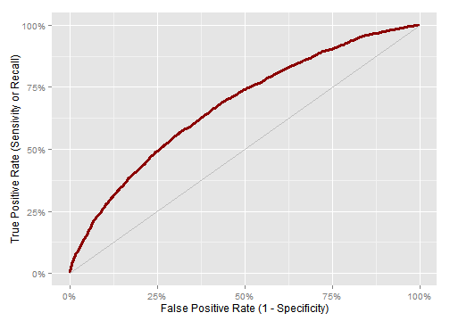
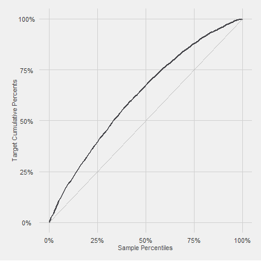
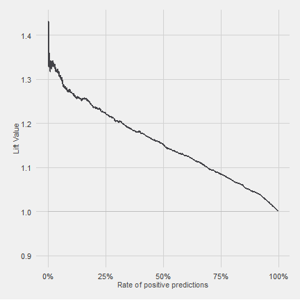
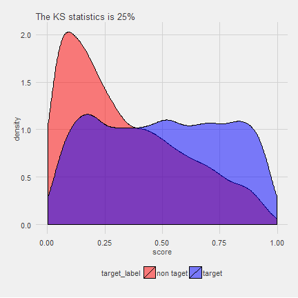
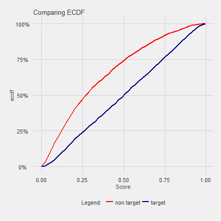
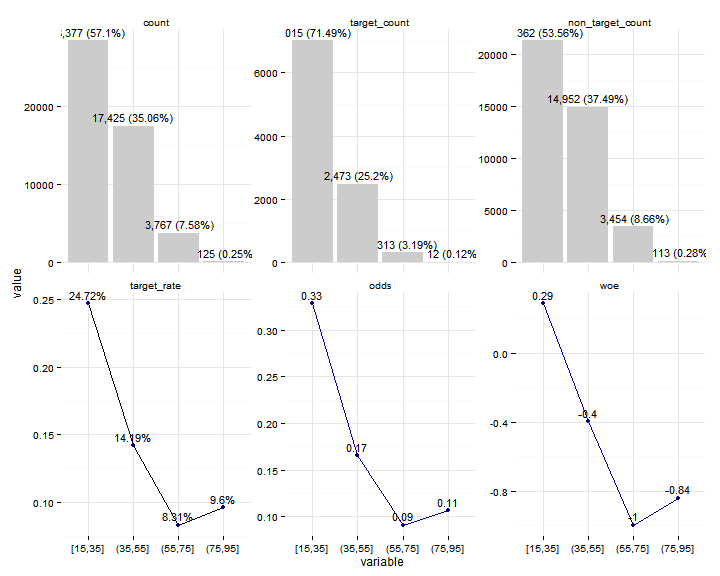
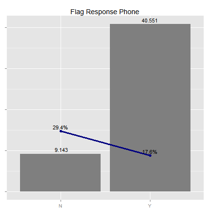

riskr

Introduction
The riskr package facilitate credit scoring tasks such as measure the scores/models performance and make easy the scoring modelling process.
There are function to:
- Measure in a simple way the performance of models via wrappers/shortcuts from ROCR functions.
- Visualize relationships between variables.
- Compute usual values in the credit scoring PSI, WOE, IV, KS, AUCROC, among others.
- Make easier the modelling and validation process.
Assumptions
riskr assume the target variable is binary with numeric values: 0 and 1. Usually 1 means the characteristic of interest.
Installation
You can install the latest development version from github with:
devtools::install_github("jbkunst/riskr")Functions
Usually we have a data frame with a target variable and a score (or probability) like this:
library("riskr")
data("predictions")
head(predictions)| score | target |
|---|---|
| 0.202 | 1 |
| 0.806 | 1 |
| 0.513 | 1 |
| 0.052 | 0 |
| 0.329 | 1 |
| 0.246 | 0 |
str(predictions)
> 'data.frame': 10000 obs. of 2 variables:
> $ score : num 0.2023 0.8058 0.5134 0.0525 0.3288 ...
> $ target: num 1 1 1 0 1 0 1 0 1 1 ...
score <- predictions$score
target <- predictions$targetPerformance Indicators
The main statistics or indicators are KS, AUCROC so:
ks(score, target)
> [1] 0.254
aucroc(score, target)
> [1] 0.676
gini(score, target)
> [1] 0.353
perf(score, target)| count | target_count | target_rate | ks | aucroc | gini |
|---|---|---|---|---|---|
| 10000 | 6990 | 0.699 | 0.254 | 0.676 | 0.353 |
There are some functions to plot the score/model performance (based on ggplot package).
plot_roc(score, target)
plot_gain(score, target)
plot_lift(score, target)
plot_dists(score, target) +
ggtitle(sprintf("The KS statistics is %.0f%%", 100 * ks(score, target)))
plot_ks(score, target) + ggtitle("Comparing ECDF")
plot_perf(score, target)
Odds Tables
The odds tables are other way to show how a score/model performs.
score <- round(predictions$score * 1000)
odds_table(score, target, nclass = 5) # default is (nclass =) 10 groups of equal size| class | count | percent | target_count | target_rate | target_percent | non_target_count | non_target_percent | odds | woe | iv |
|---|---|---|---|---|---|---|---|---|---|---|
| [1,164] | 2009 | 0.201 | 1010 | 0.503 | 0.144 | 999 | 0.332 | 1.01 | -0.832 | 0.156 |
| (164,331] | 1991 | 0.199 | 1255 | 0.630 | 0.180 | 736 | 0.245 | 1.71 | -0.309 | 0.020 |
| (331,526] | 2008 | 0.201 | 1429 | 0.712 | 0.204 | 579 | 0.192 | 2.47 | 0.061 | 0.001 |
| (526,738] | 2000 | 0.200 | 1573 | 0.786 | 0.225 | 427 | 0.142 | 3.68 | 0.461 | 0.038 |
| (738,996] | 1992 | 0.199 | 1723 | 0.865 | 0.246 | 269 | 0.089 | 6.41 | 1.015 | 0.159 |
odds_table(score, target, breaks = c(0, 300, 700, 999))| class | count | percent | target_count | target_rate | target_percent | non_target_count | non_target_percent | odds | woe | iv |
|---|---|---|---|---|---|---|---|---|---|---|
| (0,300] | 3675 | 0.368 | 2052 | 0.558 | 0.294 | 1623 | 0.539 | 1.26 | -0.608 | 0.149 |
| (300,700] | 3978 | 0.398 | 2926 | 0.736 | 0.419 | 1052 | 0.350 | 2.78 | 0.180 | 0.012 |
| (700,999] | 2347 | 0.235 | 2012 | 0.857 | 0.288 | 335 | 0.111 | 6.01 | 0.950 | 0.168 |
Confusion Matrix
The conf_matrix function return a list with the next elements:
score_cat <- ifelse(score < 500, 0, 1)
cm <- conf_matrix(score_cat, target)- The confusion matrix:
cm$confusion.matrix| class | pred 0 | pred 1 | |
|---|---|---|---|
| 0 | true 0 | 2230 | 780 |
| 1 | true 1 | 3476 | 3514 |
- The confusion matrix statistics
cm$indicators| term | term.short | value |
|---|---|---|
| Accuracy | AC | 0.574 |
| Recall | True Positive rate (GG) | Recall | 0.503 |
| False Positive rate | FP | 0.259 |
| True Negative rate (BB) | TN | 0.741 |
| False Negative rate | FN | 0.497 |
| Precision | P | 0.818 |
cm$indicators.t| AC | Recall | FP | TN | FN | P |
|---|---|---|---|---|---|
| 0.574 | 0.503 | 0.259 | 0.741 | 0.497 | 0.818 |
Bivariate Tables
data("credit")
str(credit)
> 'data.frame': 49694 obs. of 17 variables:
> $ id_client : int 1 7 9 12 14 19 22 26 28 30 ...
> $ sex : chr "F" "F" "F" "F" ...
> $ marital_status : chr "O" "S" "S" "C" ...
> $ age : int 44 22 27 32 36 46 17 20 71 46 ...
> $ flag_res_phone : chr "N" "Y" "Y" "Y" ...
> $ area_code_res_phone: int 31 31 31 31 31 50 50 50 31 31 ...
> $ payment_day : int 12 12 20 12 12 12 12 12 18 8 ...
> $ residence_type : chr "P" "A" "A" "P" ...
> $ months_in_residence: int 12 0 0 24 120 360 12 12 96 72 ...
> $ months_in_the_job : int 48 48 0 0 36 120 12 24 12 12 ...
> $ profession_code : int 731 999 950 165 15 704 38 39 13 801 ...
> $ flag_other_card : chr "N" "N" "N" "N" ...
> $ flag_mobile_phone : chr "N" "N" "N" "N" ...
> $ flag_contact_phone : chr "N" "N" "N" "N" ...
> $ personal_net_income: num 300 410 1000 700 1987 ...
> $ quant_add_cards : int 0 0 0 0 1 0 0 0 0 0 ...
> $ bad : int 0 0 1 0 0 0 1 1 0 0 ...
ft(credit$marital_status)| class | count | percent |
|---|---|---|
| S | 25249 | 0.508 |
| C | 17097 | 0.344 |
| O | 2776 | 0.056 |
| V | 2430 | 0.049 |
| D | 2142 | 0.043 |
bt(credit$marital_status, credit$bad)| class | count | percent | target_count | target_rate | target_percent | non_target_count | non_target_percent | odds | woe | iv |
|---|---|---|---|---|---|---|---|---|---|---|
| C | 17097 | 0.344 | 2483 | 0.145 | 0.253 | 14614 | 0.366 | 0.170 | -0.370 | 0.042 |
| D | 2142 | 0.043 | 322 | 0.150 | 0.033 | 1820 | 0.046 | 0.177 | -0.330 | 0.004 |
| O | 2776 | 0.056 | 660 | 0.238 | 0.067 | 2116 | 0.053 | 0.312 | 0.237 | 0.003 |
| S | 25249 | 0.508 | 6059 | 0.240 | 0.617 | 19190 | 0.481 | 0.316 | 0.249 | 0.034 |
| V | 2430 | 0.049 | 289 | 0.119 | 0.029 | 2141 | 0.054 | 0.135 | -0.600 | 0.015 |
library("ggplot2")
credit$age_bin <- cut_interval(credit$age, 3)
bt(credit$age_bin, credit$bad)| class | count | percent | target_count | target_rate | target_percent | non_target_count | non_target_percent | odds | woe | iv |
|---|---|---|---|---|---|---|---|---|---|---|
| [15,41.7] | 35654 | 0.717 | 8174 | 0.229 | 0.833 | 27480 | 0.689 | 0.297 | 0.190 | 0.027 |
| (41.7,68.3] | 13313 | 0.268 | 1585 | 0.119 | 0.162 | 11728 | 0.294 | 0.135 | -0.599 | 0.079 |
| (68.3,95] | 727 | 0.015 | 54 | 0.074 | 0.006 | 673 | 0.017 | 0.080 | -1.121 | 0.013 |
plot_ba(credit$age_bin, credit$bad)
# order by odds
lvls_rt <- bt(credit$residence_type, credit$bad) %>%
arrange(desc(odds)) %>% .[["class"]]
residence_type2 <- factor(credit$residence_type, levels = lvls_rt)
plot_ba(residence_type2, credit$bad)
The minified version of plot_ba
plot_ba2(credit$age_bin, credit$bad) + ggtitle("Age")
plot_ba2(credit$flag_res_phone, credit$bad, labels = FALSE) +
ggtitle("Flag Response Phone")
Related work
- woe package by tomasgreif
- smbinning package by Herman Jopia. Github repository.
- Guide to Credit Scoring in R
- Gains package
Session Info
library("riskr")
library("printr")
library("ggplot2")
library("ggthemes")
options(digits = 3, knitr.table.format = "markdown")
knitr::opts_chunk$set(collapse = TRUE, comment = ">", warning = FALSE,
fig.path = "vignettes/figures/",
fig.width = 6, fig.height = 6,
fig.align = "center", dpi = 72)
theme_set(theme_fivethirtyeight(base_size = 11) +
theme(axis.title = element_text(colour = "grey30"),
axis.title.y = element_text(angle = 90),
strip.background = element_rect(fill = "#434348"),
strip.text = element_text(color = "#F0F0F0"),
plot.title = element_text(face = "plain", size = structure(1.2, class = "rel"))))
update_geom_defaults("line", list(colour = "#434348", size = 1.05))
update_geom_defaults("point", list(colour = "#434348", size = 3))
update_geom_defaults("bar", list(fill = "#7cb5ec"))
update_geom_defaults("text", list(size = 4, colour = "gray30"))print(sessionInfo())
> R version 3.2.0 (2015-04-16)
> Platform: i386-w64-mingw32/i386 (32-bit)
> Running under: Windows 7 (build 7601) Service Pack 1
>
> locale:
> [1] LC_COLLATE=Spanish_Chile.1252 LC_CTYPE=Spanish_Chile.1252
> [3] LC_MONETARY=Spanish_Chile.1252 LC_NUMERIC=C
> [5] LC_TIME=Spanish_Chile.1252
>
> attached base packages:
> [1] stats graphics grDevices utils datasets methods base
>
> other attached packages:
> [1] tidyr_0.2.0 plyr_1.8.3 scales_0.2.5 dplyr_0.4.1
> [5] ROCR_1.0-7 gplots_2.17.0 ggthemes_2.2.1 ggplot2_1.0.1
> [9] printr_0.0.4 riskr_1.0
>
> loaded via a namespace (and not attached):
> [1] Rcpp_0.11.6 knitr_1.10.5 magrittr_1.5
> [4] MASS_7.3-40 munsell_0.4.2 colorspace_1.2-6
> [7] stringr_1.0.0 highr_0.5 caTools_1.17.1
> [10] tools_3.2.0 parallel_3.2.0 grid_3.2.0
> [13] gtable_0.1.2 KernSmooth_2.23-14 DBI_0.3.1
> [16] gtools_3.5.0 htmltools_0.2.6 lazyeval_0.1.10
> [19] assertthat_0.1 yaml_2.1.13 digest_0.6.8
> [22] reshape2_1.4.1 formatR_1.2 bitops_1.0-6
> [25] evaluate_0.7 rmarkdown_0.7 labeling_0.3
> [28] gdata_2.16.1 stringi_0.5-5 proto_0.3-10